CSL cuenta con un portafolio completo para atender las más diversas aplicaciones navales y offshore. Esta línea incluye productos seleccionados por su alargamiento, resistencia a la tracción, flexibilidad, vida a la fatiga y desempeño frente a la abrasión, entre otras propiedades. Nuestro equipo está preparado para entender su necesidad y ofrecer el producto ideal para su uso.
Ver Bravíssimo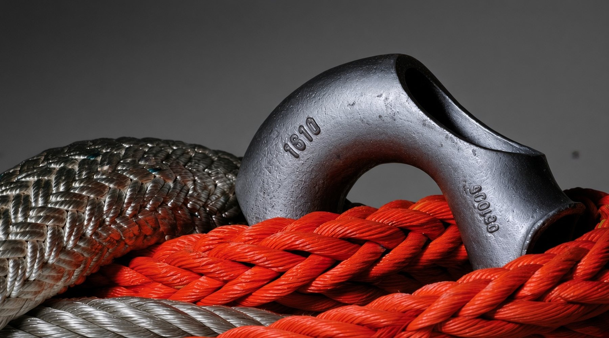
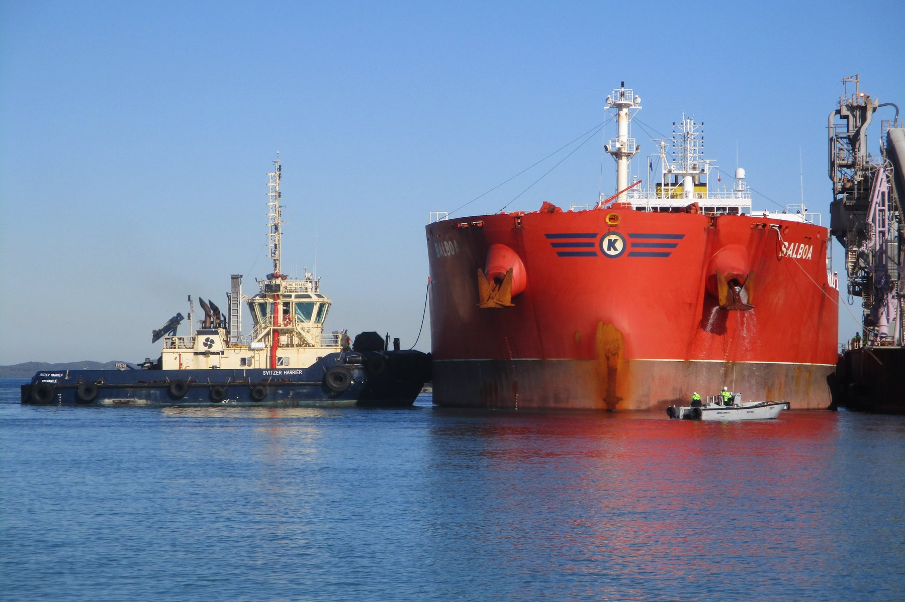
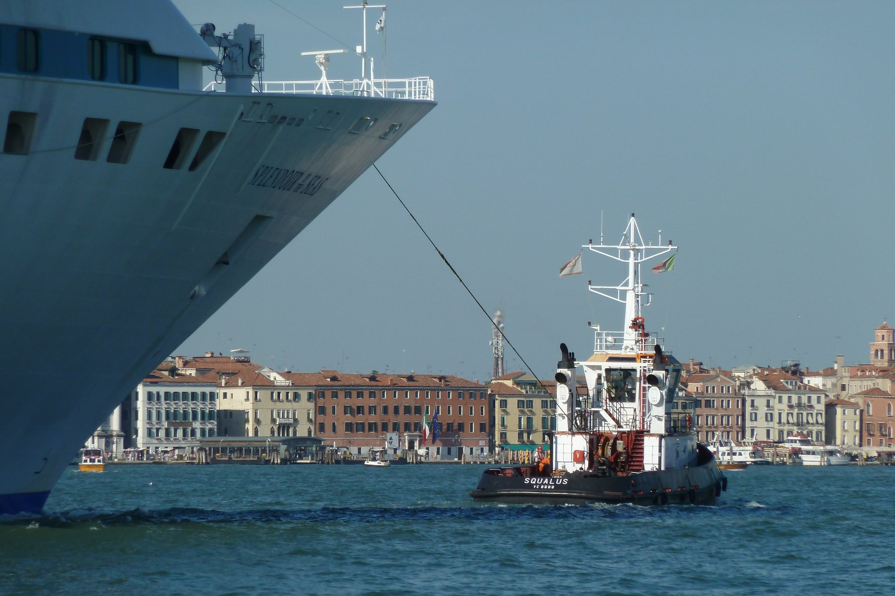
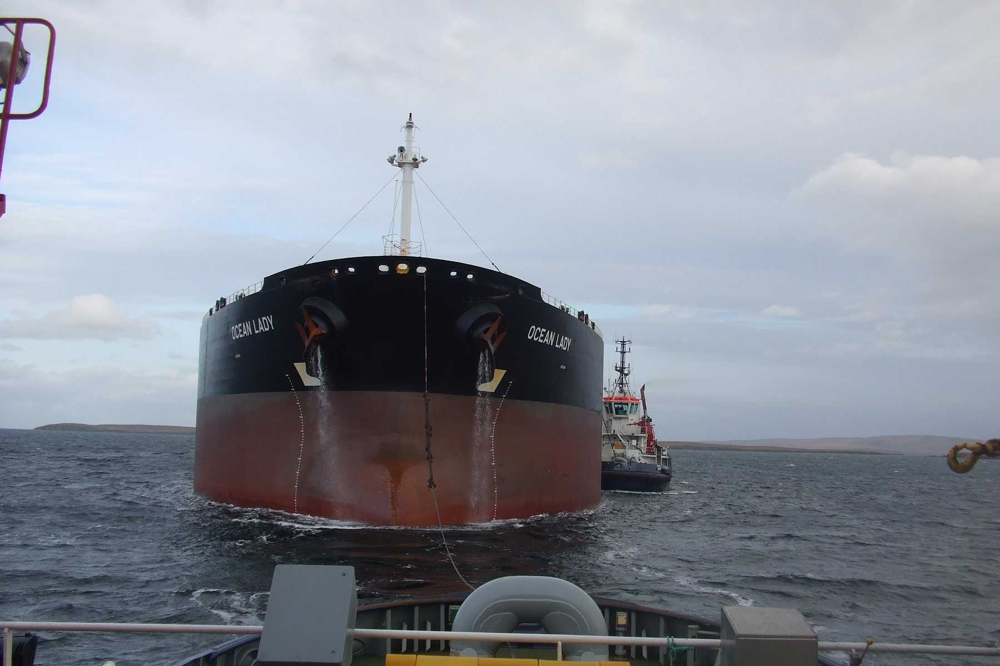
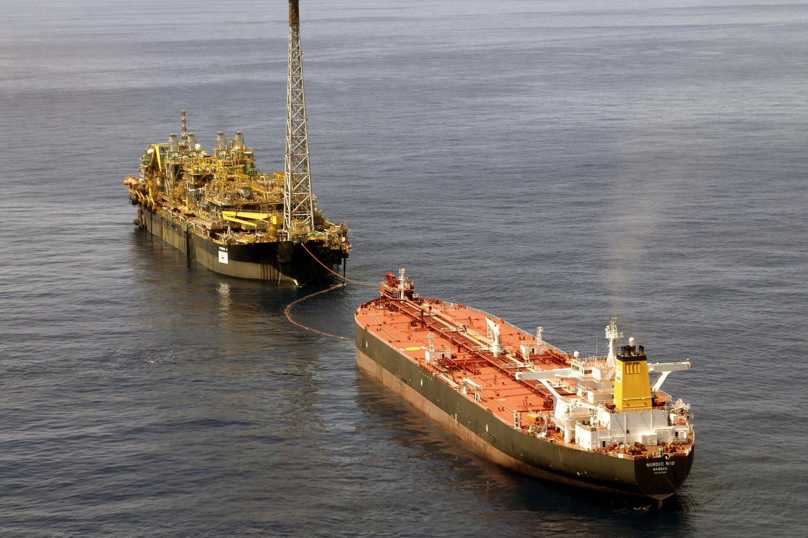
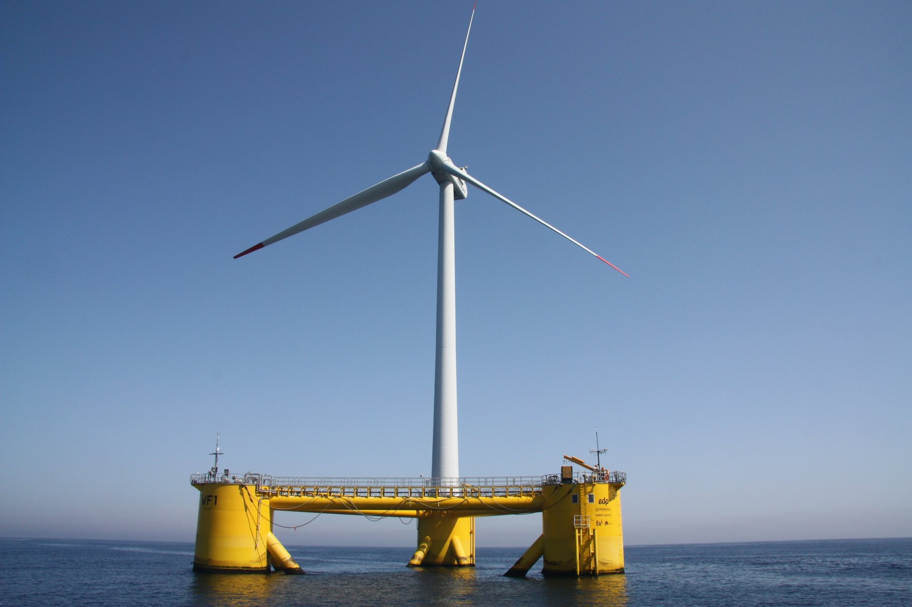
Crafting excellence
Cordoaria São Leopoldo · desde 1929
Cabos de fibra sintética de alto desempeño para amarre, remolque y anclaje offshore
Una empresa brasileña reconocida internacionalmente como uno de los grandes fabricantes mundiales de cabos y cuerdas de fibras sintéticas.
Productos
Líneas por aplicación
Cada línea reúne las fibras y construcciones indicadas para un tipo de uso.
Una disciplina que exige el producto exacto. Los cabos náuticos CSL se desarrollan en construcciones diseñadas especialmente para cada función a bordo. Fibras de alta calidad y tecnología avanzada se aplican en todos los productos, garantizando su desempeño.
Ver Doble trenzado 100% poliésterTradición y dedicación hacen de CSL una referencia en el mercado pesquero. Los cabos y cuerdas CSL están diseñados para aplicaciones exigentes, con la construcción ideal para cada tipo de uso.
Ver PB3Seguridad y facilidad de manejo son las principales características de la línea Pata Negra para uso off-road. Estos cabos se fabrican con fibras de alta tenacidad y tecnología avanzada, e incluyen un producto revolucionario que sustituye con numerosas ventajas a los cables de acero y las eslingas de poliéster en senderos y vehículos 4x4.
Ver BRAVO12Actividades como rápel, trabajos verticales y rescate, entre otras, están plenamente atendidas por los productos CSL Altura. Superando las especificaciones normativas, los productos de la línea Polaris brindan un alto nivel de seguridad a sus usuarios.
Ver Cuerda semiestática PolarisAdemás de sus productos específicos para cada aplicación, CSL desarrolló una línea que atiende una amplia gama de necesidades. Los cabos y cuerdas multiuso cubren el uso doméstico, industrial y agroindustrial, entre muchos otros segmentos.
Ver PP3Línea Marine
Aplicaciones navales y offshore
CSL cuenta con un portafolio completo para atender las más diversas aplicaciones navales y offshore. Esta línea incluye productos seleccionados por su alargamiento, resistencia a la tracción, flexibilidad, vida a la fatiga y desempeño frente a la abrasión, entre otras propiedades. Nuestro equipo está preparado para entender su necesidad y ofrecer el producto ideal para su uso.
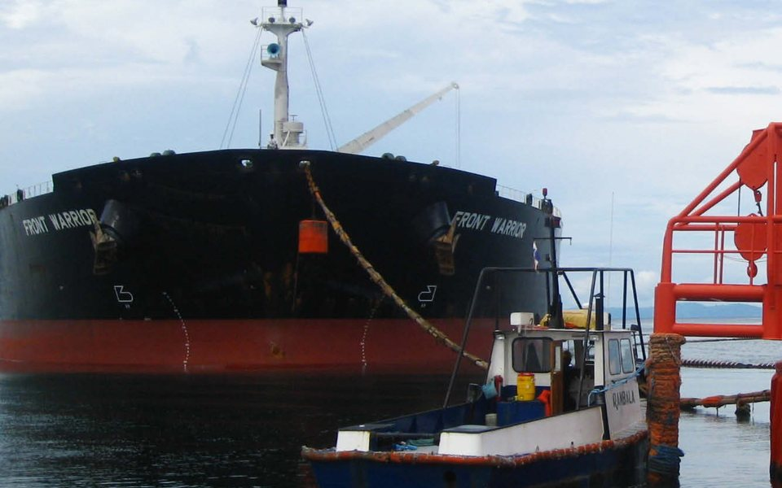
Single Point Mooring (SPM)
3 productos Victor, Nylon2IN1, Circular Nylon
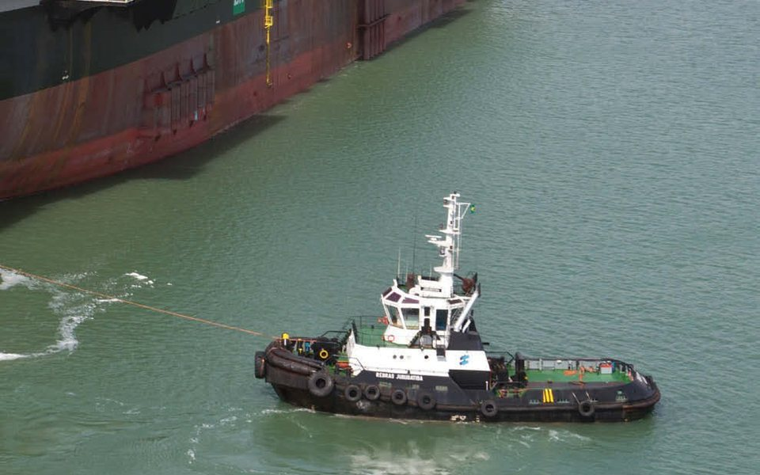
Remolque
6 productos Bravíssimo, BRAVO12, MFP8 y 3 más
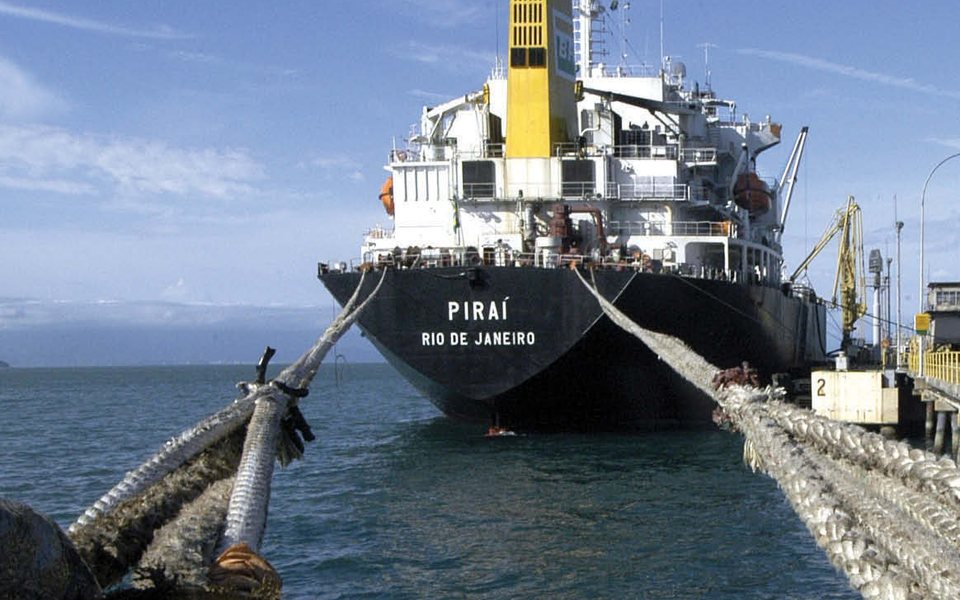
Amarre
16 productos Victor, BRAVO12, Nylon2IN1 y 13 más
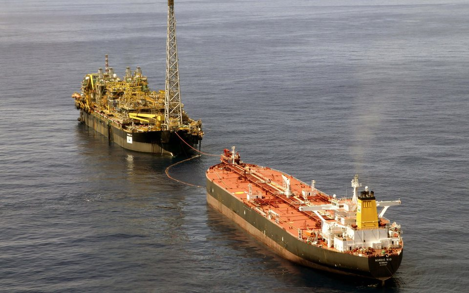
Anclaje de plataformas de petróleo
1 producto Sierra
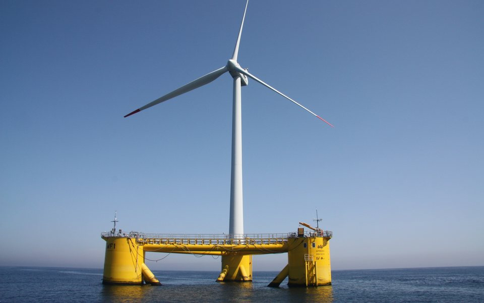
Eólica offshore flotante
Bajo consulta Anclaje de plataformas flotantes de energía eólica
Productos por construcción
Construcciones
La construcción define la forma, la flexibilidad, el alargamiento y cómo el cabo admite costuras y empalmes.
Torcido de 3 cordones
3 cordones · torsión Z o STres cordones torcidos hacia la derecha (torsión Z, estándar CSL) o hacia la izquierda (torsión S). Hilos con torsiones homogéneas dan como resultado una cuerda equilibrada, firme y flexible. También disponible en 4 cordones.
Trenzado de 8 cordones
4 cordones S + 4 cordones ZForma cuadrada. No se deforma y no tiene torsión residual. Fácil manejo, alargamiento controlado y buena resistencia a la tracción.
Trenzado de 12 cordones
6 cordones S + 6 cordones ZForma redonda, sin torsión residual. Gran flexibilidad y excelente resistencia a la abrasión y a la tracción.
Trenzado de 16 cordones
núcleo huecoConstrucción ideal para confeccionar gazas y redes de enmalle con plomos por dentro de la trenza.
Doble trenzado naval
50% funda · 50% almaEl alma, con paso de trenza largo, controla el alargamiento y preserva la resistencia; la funda circular protege contra la abrasión. Sigue las recomendaciones de la guía OCIMF.
Circular
80% alma · 20% fundaAlma con paso de trenza largo para mayor resistencia a la tracción y control del alargamiento; funda circular de alto desempeño frente al desgaste.
Doble trenzado deportivo
poliéster y HMPEPara todo tipo de drizas y escotas y para el trabajo en winches. Una elección consolidada entre los navegantes brasileños.